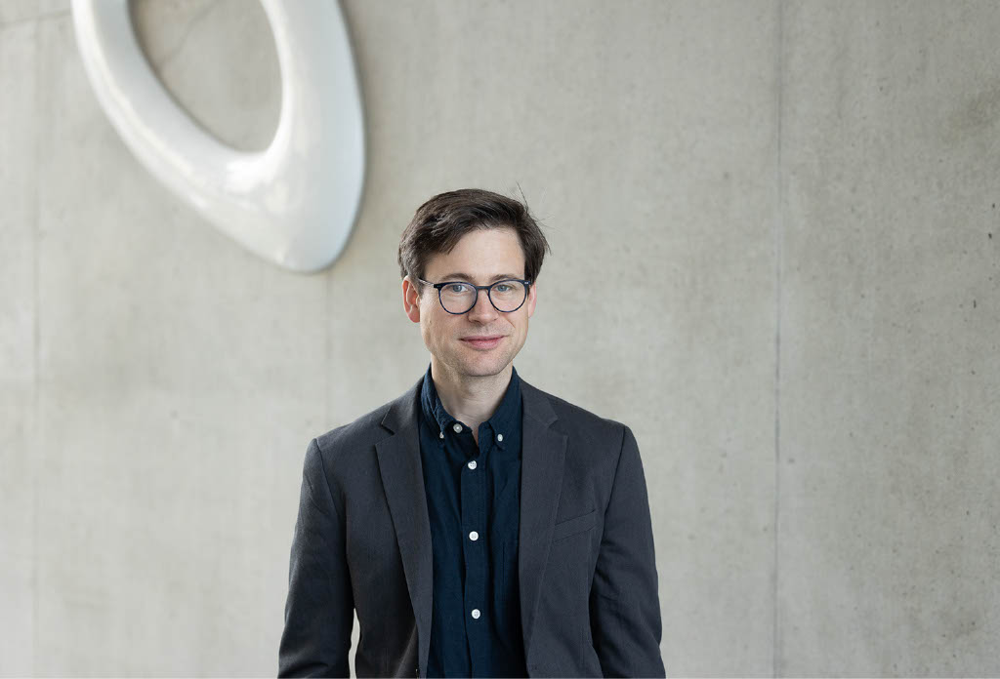

Research
Optimization, inverse problems, game theory, power systems, optimal control, and machine learning.
Research overview →Optimization and Decision Sciences
We develop mathematical theory and practical algorithms for optimization, game theory, machine learning, engineering, and societal challenges.

Welcome
Our research focuses on optimization theory with applications in Operations Research, Engineering, and Machine Learning.
We conduct fundamental research in mathematical optimization, game theory, and complexity analysis, while designing practical algorithms for important societal challenges. Key application domains include the optimization and control of energy systems and optimization methods for AI
What we do
The chair connects foundational mathematics with computational methods and applications across disciplines.
Optimization, inverse problems, game theory, power systems, optimal control, and machine learning.
Research overview →Courses in optimization, analytics and decision sciences, plus thesis supervision.
Current teaching →Our mathematical optimization seminar brings together researchers from theory and applications.
Seminar schedule →Latest
Siqi Qu joins Hong Kong Polytechnic University as a postdoctoral researcher, and Moritz Hinrich joins the team as a PhD student.
We are organizing the IFIP TC-7 workshop at the interface of inverse problems and mathematical optimization.